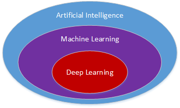
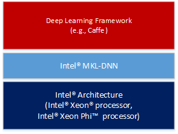
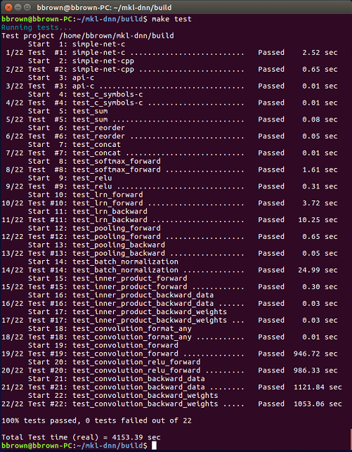
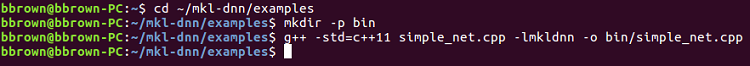
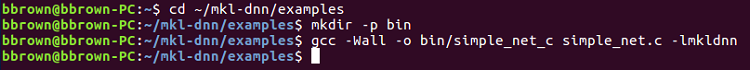

Intel® Math Kernel Library for Deep Learning Networks: Part 1–Overview and Installation
By Bryan B. (Intel), published on March 13, 2017, updated January 26, 2018
Introduction
Deep learning is one of the hottest subjects in the field of computer science these days, fueled by the convergence of massive datasets, highly parallel processing power, and the drive to build increasingly intelligent devices. Deep learning is described by Wikipedia as a subset of machine learning (ML), consisting of algorithms that model high-level abstractions in data. As depicted in Figure 1, ML is itself a subset of artificial intelligence (AI), a broad field of study in the development of computer systems that attempt to emulate human intelligence.

Figure 1. Relationship of deep learning to AI.
Intel has been actively involved in the area of deep learning though the optimization of popular frameworks like Caffe* and Theano* to take full advantage of Intel® architecture (IA), the creation of high-level tools like the Intel® Deep Learning SDK for data scientists, and providing software libraries to the developer community like Intel® Data Analytics Acceleration Library (Intel® DAAL) and Intel® Math Kernel Library for Deep Neural Networks (Intel® MKL-DNN).
Intel MKL-DNN is an open source, performance-enhancing library for accelerating deep learning frameworks on IA. Software developers who are interested in the subject of deep learning may have heard of Intel MKL-DNN, but perhaps haven’t had the opportunity to explore it firsthand.
The Developer's Introduction to Intel MKL-DNN tutorial series examines Intel MKL-DNN from a developer’s perspective. Part 1 identifies informative resources and gives detailed instructions on how to install and build the library components. Part 2 of the tutorial series provides information on how to configure the Eclipse* integrated development environment to build the C++ code sample, and also includes a source code walkthrough.
Intel® MKL-DNN Overview
As depicted in Figure 2, Intel MKL-DNN is intended for accelerating deep learning frameworks on IA. It includes highly vectorized and threaded building blocks for implementing convolutional neural networks with C and C++ interfaces.

Figure 2.Deep learning framework on IA.
Intel MKL-DNN operates on these main object types: primitive, engine, and stream. These objects are defined in the library documentation as follows:
- Primitive - any operation, including convolution, data format reorder, and memory. Primitives can have other primitives as inputs, but can have only memory primitives as outputs.
- Engine - an execution device, for example, CPU. Every primitive is mapped to a specific engine.
- Stream - an execution context; you submit primitives to a stream and wait for their completion. Primitives submitted to a stream may have different engines. Stream objects also track dependencies between the primitives.
A typical workflow is to create a set of primitives, push them to a stream for processing, and then wait for completion. Additional information on the programming model is provided in the Intel MKL-DNN documentation.
Resources
There are a number of informative resources available on the web that describe what Intel MKL-DNN is, what it is not, and what a developer can expect to achieve by integrating the library with his or her deep learning project.
GitHub Repository
Intel MKL-DNN is an open source library available to download for free on GitHub*, where it is described as a performance library for DL applications that includes the building blocks for implementing convolutional neural networks (CNN) with C and C++ interfaces.
An important thing to note on the GitHub site is that although the Intel MKL-DNN library includes functionality similar to Intel® Math Kernel Library (Intel® MKL) 2017, it is not API compatible. At the time of this writing the Intel MKL-DNN release is a technical preview, implementing the functionality required to accelerate image recognition topologies like AlexNet* and VGG*.
Intel Open Source Technology Center
The MKL-DNN|01.org project microsite is a member of the Intel Open Source Technology Center known as 01.org, a community supported by Intel engineers who participate in a variety of open source projects. Here you will find an overview of the Intel MKL-DNN project, information on how to get involved and contribute to its evolution, and an informative blog entitled Introducing the Intel® Math Kernel Library for Deep Neural Networks (Intel® MKL-DNN) by Kent Moffat.
Installing Intel MKL-DNN
This section elaborates on the installation information presented on the GitHub repository site by providing detailed, step-by-step instructions for installing and building the Intel MKL-DNN library components. The computer you use will require an Intel® processor supporting Intel® Advanced Vector Extensions 2 (Intel® AVX2). Specifically, Intel MKL-DNN is optimized for Intel® Xeon® processors and Intel® Xeon Phi™ processors.
GitHub indicates the software was validated on RedHat* Enterprise Linux* 7; however, the information presented in this tutorial was developed on a system running Ubuntu* 16.04.
Install Dependencies
Intel MKL-DNN has the following dependencies:
- CMake* – a cross-platform tool used to build, test, and package software.
- Doxygen* – a tool for generating documentation from annotated source code.
If these software tools are not already set up on your computer you can install them by typing the following:
sudo apt install cmake
sudo apt install doxygen
Download and Build the Source Code
Clone the Intel MKL-DNN library from the GitHub repository by opening a terminal and typing the following command:
git clone https://github.com/01org/mkl-dnn.git
Note: if Git* is not already set up on your computer you can install it by typing the following:
sudo apt install git
Once the installation has completed you will find a directory named mkl-dnn in the Home directory. Navigate to this directory by typing:
cd mkl-dnn
As explained on the GitHub repository site, Intel MKL-DNN uses the optimized general matrix to matrix multiplication (GEMM) function from Intel MKL. The library supporting this function is also included in the repository and can be downloaded by running the prepare_mkl.sh script located in the scripts directory:
cd scripts && ./prepare_mkl.sh && cd ..
This script creates a directory named external and then downloads and extracts the library files to a directory named mkl-dnn/external/mklml_lnx*.
The next command is executed from the mkl-dnn directory; it creates a subdirectory named build and then runs CMake and Make to generate the build system:
mkdir -p build && cd build && cmake .. && make
Validating the Build
To validate your build, execute the following command from the mkl-dnn/build directory:
make test
This step executes a series of unit tests to validate the build. All of these tests should indicate Passed, and the processing time as shown in Figure 3.

Figure 3.Test results.
Library Documentation
Documentation for Intel MKL-DNN is available online. This documentation can also be generated locally on your system by executing the following command from the mkl-dnn/build directory:
make doc
Finalize the Installation
Finalize the installation of Intel MKL-DNN by executing the following command from the mkl-dnn/build directory:
sudo make install
The next step installs the libraries and other components that are required to develop Intel MKL-DNN enabled applications under the /usr/local directory:
Shared libraries (/usr/local/lib):
- libiomp5.so
- libmkldnn.so
- libmklml_intel.so
Header files (/usr/local/include):
- mkldnn.h
- mkldnn.hpp
- mkldnn_types.h
Documentation (/usr/local/share/doc/mkldnn):
- Intel license and copyright notice
- Various files that make up the HTML documentation (under /reference/html)
Building the Code Examples on the Command Line
The GitHub repository contains C and C++ code examples that demonstrate how to build a neural network topology block that consists of convolution, rectified linear unit, local response normalization, and pooling. The following section describes how to build these code examples from the command line in Linux. Part 2 of the tutorial series demonstrates how to configure the Eclipse integrated development environment for building and extending the C++ code example.
C++ Example Command-Line Build (G++)
To build the C++ example program (simple_net.cpp) included in the Intel MKL-DNN repository, first go to the examples directory:
cd ~/mkl-dnn/examples
Next, create a destination directory for the executable:
mkdir –p bin
Build the simple_net.cpp example by linking the shared Intel MKL-DNN library and specifying the output directory as follows:
g++ -std=c++11 simple_net.cpp –lmkldnn –o bin/simple_net_cpp

Figure 4.C++ command-line build using G++.
Go to the bin directory and run the executable:
cd bin
./simple_net_cpp
C Example Command-Line Build Using GCC
To build the C example application (simple_net.c) included in the Intel MKL-DNN repository, first go to the examples directory:
cd ~/mkl-dnn/examples
Next, create a destination directory for the executable:
mkdir –p bin
Build the simple_net.c example by linking the Intel MKL-DNN shared library and specifying the output directory as follows:
gcc –Wall –o bin/simple_net_c simple_net.c -lmkldnn

Figure 5.C command-line build using GCC.
Go to the bin directory and run the executable:
cd bin
./simple_net_c
Once completed, the C application will print either passed or failed to the terminal.
Next Steps
At this point you should have successfully installed the Intel MKL-DNN library, executed the unit tests, and built the example programs provided in the repository. In Part 2 of the Developer's Introduction to Intel MKL-DNN you’ll learn how to configure the Eclipse integrated development environment to build the C++ code sample along with a walkthrough of the code.

1 comment
Topliu, shuai said on Aug 15,2018
kkkkkkkkkkkkkkkkkkk
Add a Comment
Sign inHave a technical question? Visit our forums. Have site or software product issues? Contact support.